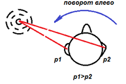
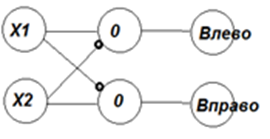
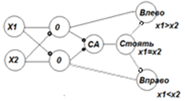
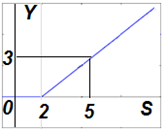
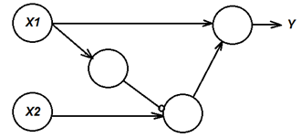
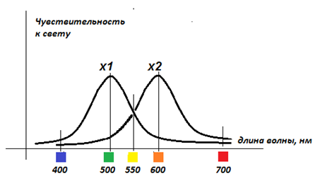
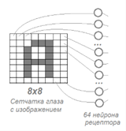
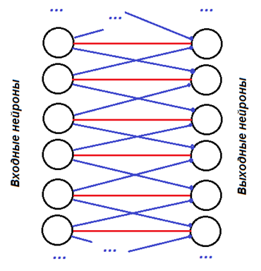

|
Лекция 41.
| ||||||||||||||||||||||||||||||||||||||||||||||||
| Рецепторы | Эффекторы | |||
|---|---|---|---|---|
| X1 | X2 | Y1 | Y2 | Y3 |
| 2 | 2 | 0 | 0 | 1 |
| 2 | 5 | 0 | 1 | 0 |
| 5 | 2 | 1 | 0 | 0 |
| 5 | 5 | 0 | 0 | 1 |
Человек имеет две ушные раковины, размещённые на определённом расстоянии друг от друга. Кости головы приглушают проходящий через них звук. Когда звук раздаётся слева от человека, то на левую перепонку давит бОльшее звуковое давление P1, чем на правую P2. Нейросеть, определит, что Х1>Х2, и даст команду мышцам на разворот головы влево.



Особенностью функции ReLu является то, что если на сумматоре нейрон имеет сигнал величиной S=5, а порог равен h=2, то на выходе нейрона будет сигнал S-h=5-2=3.

Построим нейросеть, которая из двух входных сигналов - чисел X1 и X2 - пропускает на выход Y максимальное из них: Y=max(X1,X2).

| Рецепторы | Эффектор | |
|---|---|---|
| X1 | X2 | Y |
| 3 | 3 | 3 |
| 3 | 7 | 7 |
| 7 | 3 | 7 |
| 7 | 7 | 7 |
До этого мы научились реализовывать любые логические функции, имея в арсенале элементы: И, ИЛИ, НЕ. То есть обеспечили аналог оператора присвоения и вычисления двоичных арифметических выражений в языках программирования.
Теперь в арсенале нейросхем появляется реализация, аналогичная условному оператору в программировании: IF (X1>X2) THEN Y:=X1 ELSE Y:=X2.
Задания
- Спроектируйте нейронную сеть, умеющую из двух чисел выбирать наименьшее. Объедините сети: Y1=max(X1,X2), Y2=min(X1,X2) в одну с двумя выходами.
- Постройте сеть, реализующую функции Y=abs(X) и Y=sign(X). Используйте факт связи двух функций: ReLu(X)=(X+abs(X))/2.
Пример «Детектор цвета». Человек различает цвета. Примем для простоты 5 цветов: фиолетовый (длина волны — 400 нм), зелёный (500 нм), жёлтый (550 нм), оранжевый (600 нм), красный (700 нм). Чтобы построить нейросеть, которая бы определяла цвет образца, демонстрируемого человеку, достаточно на входе иметь от рецепторов глаза два сигнала X1и X2. На рисунке показан график чувствительности глазных рецепторов. Рецепторы имеют различную чувствительность к разным цветам. Кроме того, два типа рецепторов образуют сдвиг кривой чувствительности друг относительно друга. Именно это даёт им возможность определить конкретный цвет по разнице X1 и X2.

В области 400 нм X1>X2, в области 500 нм X1>>X2, в области 550 нм X1=X2, в области 600 нм X1<<X2, в области 700 нм X1<X2. Вычисление знака, величины сигнала и величины разности двух сигналов X1 и X2 даёт возможность сети уверенно различать цвета.
Задания
- Соберите сеть, которая имеет на входе 2 рецептора: Х1 и Х2, а на выходе имеет 5 эффекторов (синий, зелёный, жёлтый, оранжевый, красный). Преобразуйте комбинацию сигналов Х1 и Х2 в цветовые ощущения.
- Добавьте в схему сети условие «мелкий и движущийся предмет». Например, известно, что лягушка хватает и проглатывает тёмные, цветные, мелкие движущиеся предметы. Для реализации достаточно создать поле рецепторов глаза.

- Черепаха Уолтера. В истории известна реализация кибернетического устройства, собранная из 3 колес, платформы, аккумулятора, фотоэлемента, лампы и бампера с упругим контактом, которое осуществляло: движение на свет (приближалась к слабоосвещённым предметам и удалялась от сильно освещённых), поисковые движения, исследуя пространство вокруг себя, обход препятствий, движение к подзарядке по мере истощения заряда аккумулятора, узнавание себя в зеркале по отражению в нем собственной лампы. Соберите схему нейронной сети.
Латеральная сеть (обратная задача)
В области лба у человека обнаружены нейросети в виде очень длинных регулярных структур. Определите их предназначение (синим обозначены тормозные связи, красным - возбуждающие) для интеллектуальной деятельности человека.

Задания
- Нарисуйте в тетради латеральную сеть, нарисуйте типичный входной и выходной сигналы на рецепторах и эффекторах, сделайте и запишите в тетради вывод: «что делает данная нейронная сеть и для чего она нужна живым организмам».
Статические (регулярные) сети – это сети, которые на один и тот же набор входных сигналов реагируют каждый раз одинаковым результатом на выходе. Однако, чтобы научиться чему-либо, требуется перестройка структуры сети.
В разное время (до и после обучения) сеть должна реагировать по-разному. Такие сети называются динамическими. Для этого в составе динамической сети должна быть одна или несколько ячеек памяти. Добиться этого можно только петлями обратной связи в составе нейронной схемы.
Презентация:
| Лекция 40. Нейроны. Построение нейронной сети вручную | Лекция 42. Динамические нейросети. Сети с памятью | ||||||||||||||||
|
|||||||||||||||||